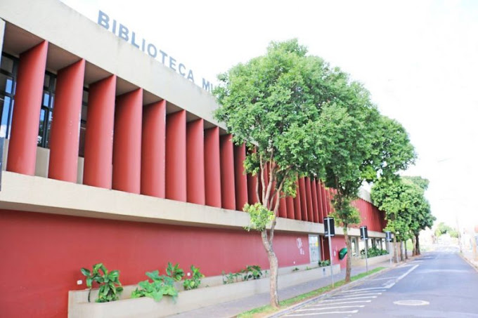
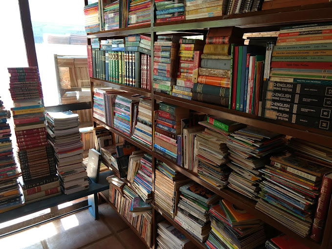

-
Indicações de livrarias locais
Sebo da Jozi
Endereço: R. Tristão de Castro, 185 - Centro, Uberaba - MG, 38010-250
Telefone: (34) 3317-6060
Dias Horários Segunda 13:30–18:00 Terça 13:30–18:00 Quarta 13:30–18:00 Quinta 13:30–18:00 Sexta 13:30–18:00 Sabado 10:00-13:00 Domingo Fechado

-
Biblioteca municipal de Uberaba
Endereço: R. Alaor Prata, 317 - Estados Unidos, Uberaba - MG, 38015-040
Telefone: (34) 3332-1900
Dias Horários Segunda 08:00–21:00 Terça 08:00–21:00 Quarta 08:00–21:00 Quinta 08:00–21:00 Sexta 08:00–21:00 Sabado 08:00–13:00 Domingo Fechado
Localização
-
Sebo Amigos do Livro
Endereço: Av. da Saudade, 140 - Santa Marta, Uberaba - MG, 38061-000
Telefone: (34) 99660-6438
Dias Horários Segunda 09:00–18:00 Terça 09:00–18:00 Quarta 09:00–18:00 Quinta 09:00–18:00 Sexta 09:00–18:00 Sabado 09:00–13:00 Domingo Fechado Localização
Localização